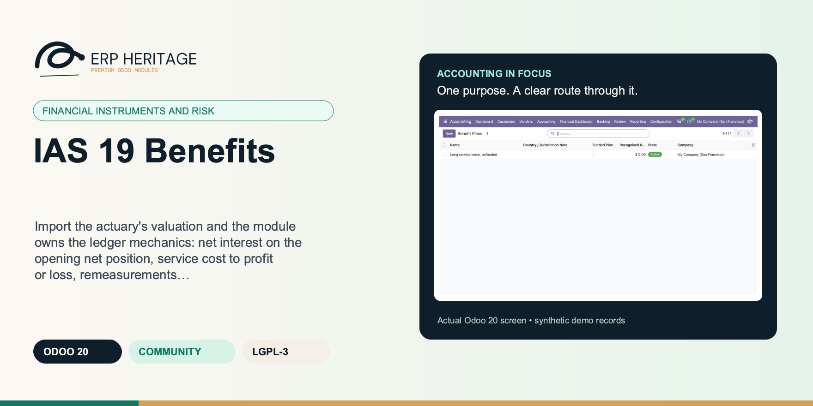
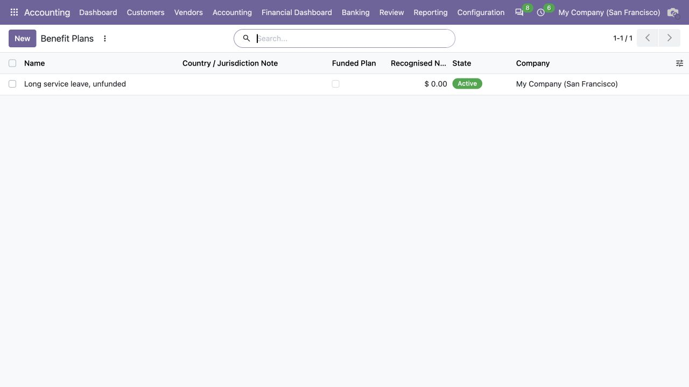
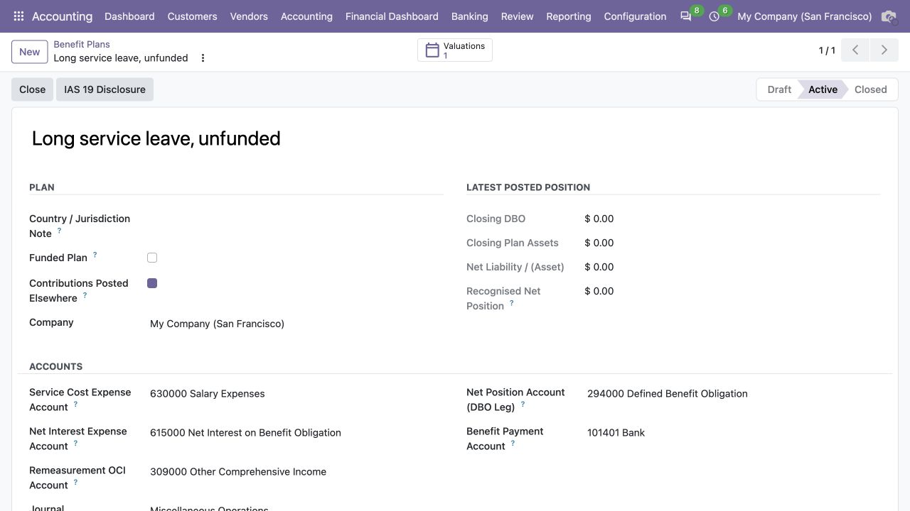
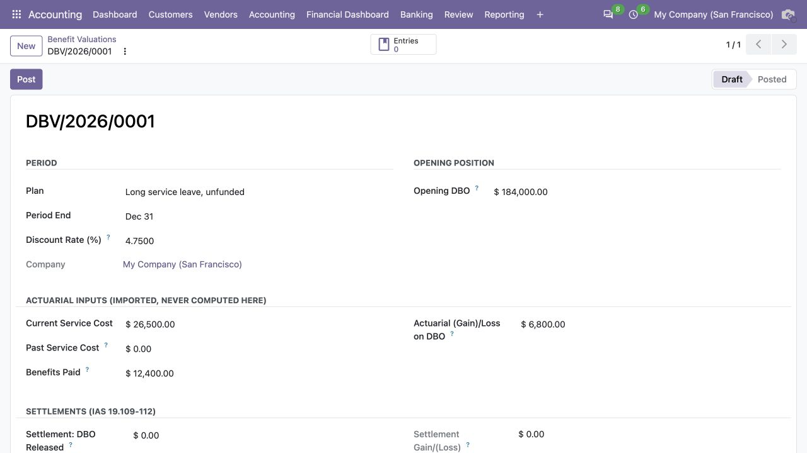

ERP HERITAGE / ODOO 20 COMMUNITY
Import the actuary's valuation and the module owns the ledger mechanics: net interest on the opening net position, service cost to profit or loss, remeasurements to non-recycling OCI, the asset ceiling, settlements, and rollforward ties that keep every disclosure schedule reconciled.
LGPL-3 · Odoo 20 · v20.0.1.0.7 · Module guide, setup, workflows and rollout checks
The purpose
An IAS 19 accounting layer for defined benefit valuations and defined contribution accruals. Actuarial results are imported inputs; the module has no actuarial engine. It computes the ledger mechanics for net interest, service cost, settlements, non-recycling OCI remeasurements, the asset ceiling, tied obligation and plan-asset rollforwards, and one sealed entry per valuation. A rendered IAS 19.140-141 disclosure schedule presents the recognised liability or asset net per plan. Short-term benefits, other long-term benefits, termination benefits, and reimbursement rights are explicitly outside this module's scope.
Inside Odoo 20
Captured from Odoo 20 Community using synthetic demonstration records. Configuration screens show the available workflow; external service connectivity still requires the relevant provider setup and validation.

Active benefit plan register shows the latest posted position; the example valuation remains unposted.
Captured 2026-09-22 from isolated Odoo 20 Community database with synthetic demonstration records. No external submission or live banking activity is represented.

Unfunded long-service-leave plan configures service cost, obligation and remeasurement accounts.
Captured 2026-09-22 from isolated Odoo 20 Community database with synthetic demonstration records. No external submission or live banking activity is represented.

Draft valuation records actuarial inputs, benefit payments and remeasurement for review before posting.
Captured 2026-09-22 from isolated Odoo 20 Community database with synthetic demonstration records. No external submission or live banking activity is represented.
Inside this module
Current and past service cost and net interest go to profit or loss; actuarial gains and losses, the excess return on plan assets and asset ceiling changes go to other comprehensive income and are never recycled (IAS 19.122). Each posted valuation books one balanced entry that splits them correctly.
The closing obligation and closing plan assets are editable so the actuary's reported figures can be keyed, but a rollforward-tie constraint refuses any closing that does not reconcile to the movement analysis within a cent, and each period's opening chains to the prior posted valuation's closing.
When the plan is in surplus, the recognised asset is the lesser of the surplus and the asset ceiling (IAS 19.64); the unrecognisable excess is an allowance credited to the plan asset account, and its period change routes to OCI, disclosed separately in the ceiling schedule.
A keyed closing obligation or plan asset that does not reconcile to opening plus the movement analysis within one cent is refused, and the check re-runs at the posting gate, so a draft made before the prior period posted can never slip a stale opening onto the ledger.
A funded plan pays benefits and settlements out of plan assets with no employer cash leg; an unfunded plan holds no assets at all, so opening assets, contributions and excess return are constrained to zero and the employer pays benefits directly. The asset ceiling can never apply to an unfunded plan.
Past service cost is recognised in profit or loss immediately, never spread, and may be negative for a benefit reduction; a settlement gain or loss is computed as the obligation released minus the payment and sits inside service cost, per IAS 19.8 and 19.103.
Valuations post in period order and reversal runs newest to oldest, so the opening-to-closing chain that makes the disclosure schedules audit-proof can never be broken from the middle.
A posted valuation freezes its inputs and cannot be deleted or re-keyed; the generated entry is sealed against the standard reversal wizard, so a restatement always runs through the module's own Reverse action that posts the mirroring entry.
From input to outcome
Create the plan and account configuration, then enter the external actuarial figures and opening balances for the reporting period. Gather actuarial valuation inputs, obligation and asset rollforwards, service cost, net interest, remeasurements and contribution accruals. Use a representative case with a known expected result so the team can separate configuration decisions from unexpected behaviour. Keep the supporting commercial or accounting evidence available during review.
Review the obligation and plan-asset rollforwards, recognised net position, asset ceiling and allocation between profit or loss and OCI. Follow the record’s available actions in the order intended by the workflow. Review the selected company, relevant dates and any validation messages before continuing. If the source data changes, reassess the result against the updated evidence.
You register the defined benefit plan, mark it funded or unfunded, set the accounts and the contribution routing, and activate it. Each period you create a valuation and key the actuary's figures: the obligation and plan assets, the service cost, the actuarial gains and losses, contributions and benefits paid, the discount rate and any settlement. The module derives net interest on the opening balances, the closing rollforward, the P&L and OCI split and the asset ceiling. It refuses to post if a closing figure does not tie or the opening does not chain to the prior period. When it does tie, a manager posts one balanced sealed entry, and the IAS 19.140-141 obligation, asset and ceiling schedules read straight off the posted ledger.
Post the supported valuation or defined-contribution accrual and inspect its linked entry and disclosure output. Compare the outcome with the expected treatment for this case and record the reason for any difference that requires follow-up. Give exceptions an owner so they do not disappear inside a period-end spreadsheet.
Retain the actuary’s report with the source evidence; the module contains accounting mechanics rather than an actuarial valuation engine. Include the accepted operating example, configuration choices and unresolved dependencies in the handover. Review them when business policy, source data or the surrounding Odoo applications change.
Business situations
IAS 19 Benefits is relevant to benefits accountants and controllers receiving actuarial reports who need to answer this question: How do supplied benefit-plan results become tied ledger movements and plan disclosures? Start with the process that creates the decision, identify its owner and agree what evidence the reviewer needs. A narrow pilot helps the team evaluate the supported workflow using its own accounting data before broadening access.
Use the module’s financial instruments and risk role as one part of a controlled close. Bring the relevant actuarial valuation inputs, obligation and asset rollforwards, service cost, net interest, remeasurements and contribution accruals to the review, then explain the result alongside the business event it represents. Establish which outputs become part of the reporting pack and which outstanding matters need a separate accounting decision.
Turn the business question into an acceptance case: How do supplied benefit-plan results become tied ledger movements and plan disclosures? Use one ordinary example and one relevant exception from the supported scope below. Ask the intended operator to prepare it and the reviewer to explain the result. Retain that accepted example with the deployment notes so future changes can be assessed against an understood process.
Before the first result
Confirm that the organisation needs the supported financial instruments and risk process described here. Identify the responsible benefits accountants and controllers receiving actuarial reports and write down the decision they expect the module to support. Use the limitations section to separate shipped behaviour from an integration, professional judgement or operational service that needs another owner.
Prepare actuarial valuation inputs, obligation and asset rollforwards, service cost, net interest, remeasurements and contribution accruals. Check the relevant records in the intended company and use dates that match the business event. Resolve missing accounting configuration before evaluating calculated output; plausible-looking totals do not establish that the chosen inputs or policies are correct.
This module declares Accounting Suite Base as part of its installation foundation. Its direct standard-Odoo dependencies are account, mail. Review the actual dependency set in the target database before a rollout, especially where another addon also extends the same accounting models, menus or posting actions.
Define who operates IAS 19 Benefits, who reviews unusual results and who maintains configuration. Run the representative workflow below in a test database using the intended users. Confirm that users can reach the work they own and that the reviewer understands the available evidence before moving the process into live operation.
Workflow reference
One record per plan carrying the funded flag, real clearing-versus-bank contribution routing, the net-position account legs, P&L and OCI accounts, and the journal, with a draft, active and closed lifecycle.
The actuary's imported inputs plus the computed net interest, service cost total, settlement gain or loss, closing rollforward, net liability or asset, asset ceiling effect and OCI remeasurement, all rounded in a documented order.
Keyed closing figures must reconcile to the movement analysis within a cent, opening figures must equal the prior posted closing, and both re-check at the posting gate.
One balanced sealed journal entry per posted valuation, with an internal balance assertion, and a state-machine Reverse that posts the mirroring entry rather than editing the sealed move.
A printable report consumes the obligation, plan asset and asset ceiling reconciliations and presents one net recognised liability or asset per plan.
A post-once period accrual books the contribution as an expense and payable in one sealed entry. Other IAS 19 benefit classes are explicitly outside this module.
Exact accounting date for the sealed reversal. If blank, the original entry date is used; Odoo may not silently shift it.
Funded: the plan holds assets, and benefits and settlement payments are paid out of those assets. Unfunded: the plan holds no assets and the employer pays benefits directly (credited to the benefit payment account).
Default True: payroll pays the fund and posts the cash leg (Dr contribution clearing / Cr bank); the valuation entry credits the contribution clearing account. Untick only when nothing else posts the payment, in which case the valuation entry credits the bank/clearing account directly.
P&L. Carries current service cost, past service cost (IAS 19.103) and settlement gains/losses (IAS 19.8 includes them in service cost).
P&L. Net interest on the opening net defined benefit liability/(asset) at the discount rate (IAS 19.123). A net asset position produces net interest income (credit).
Equity/OCI. Remeasurements (actuarial gains and losses on the obligation, excess return on plan assets, asset ceiling changes) go here and are NEVER reclassified to profit or loss (IAS 19.122).
Balance-sheet account for the obligation leg. For net presentation under IAS 19.63 this must be the same account as the Plan Asset Leg field.
Balance-sheet account for the plan-asset and asset-ceiling legs. It must equal the DBO Leg account so the statement of financial position carries one net plan position.
Defaults to the prior posted valuation's closing DBO and is constrained to equal it; editable only on the plan's first valuation.
Defaults to the prior posted valuation's closing plan assets and is constrained to equal it; editable only on the plan's first valuation.
Plan amendment or curtailment result: recognised in profit or loss IMMEDIATELY (IAS 19.103), never spread and never in OCI. May be negative when an amendment reduces benefits.
Benefits paid in the period. Funded plan: paid out of plan assets (reduces both the DBO and the assets, no employer cash leg). Unfunded plan: paid by the employer, credited to the plan's benefit payment account.
Employer contributions into the fund (funded plans only). The credit goes to the contribution clearing account when contributions are posted elsewhere (default), otherwise to the bank account.
Annual rate per IAS 19.83 (high quality corporate bonds), as a percentage. Applied to the OPENING balances for net interest (IAS 19.123 simplified); mid-year cash-flow weighting is out of scope.
Demographic and financial remeasurement of the obligation. LOSS POSITIVE: a positive amount increases the DBO and is debited to OCI.
Actual return on plan assets minus the interest income component. GAIN POSITIVE: a positive amount increases plan assets and is credited to OCI.
Tick when the actuary has determined the asset ceiling (the present value of refunds and contribution reductions available from the plan). A surplus is then recognised only up to that ceiling (IAS 19.64).
Service cost + net interest - settlement gain: everything IAS 19 routes to profit or loss. Remeasurements never appear here.
Derived from the rollforward; the actuary's reported closing may be keyed here but must tie to the movement analysis within 0.01 or posting-time validation refuses it.
Actuarial (gain)/loss on the DBO minus the excess return on assets plus the ceiling effect change. LOSS POSITIVE = debit to OCI. Never recycled to profit or loss (IAS 19.122).
Illustrative implementation exercise. The actuary supplies period-end obligation and plan-asset figures with service cost, interest and remeasurement information. Enter those inputs against the plan’s approved opening position and accounts. Review the rollforwards, asset ceiling and recognised net position before accepting the separation between profit or loss and non-recycling OCI. Compare the proposed entry and rendered disclosure with the external valuation workpaper. Include a defined-contribution accrual example where that separate supported process is needed. The accounting module does not calculate actuarial assumptions or the defined-benefit obligation from employee demographics; those supplied results remain the responsibility of the external valuation process.
Questions before rollout
It is designed for benefits accountants and controllers receiving actuarial reports. Its central business question is: How do supplied benefit-plan results become tied ledger movements and plan disclosures? The listing describes the shipped operating scope and the decisions that remain with the organisation. Evaluate it against your own records and review process, rather than treating the module name as a promise to cover every scenario in that accounting area.
Have actuarial valuation inputs, obligation and asset rollforwards, service cost, net interest, remeasurements and contribution accruals ready, together with the person who owns the related accounting policy. Create the plan and account configuration, then enter the external actuarial figures and opening balances for the reporting period. A known example makes it possible to check the result and resolve configuration questions before the process is repeated across more records or companies.
Post the supported valuation or defined-contribution accrual and inspect its linked entry and disclosure output. Keep the relevant source evidence with the output and be explicit about company, date and policy choices. The most useful review asks whether the result follows from the business inputs, not only whether the operation completed without a validation message.
It belongs to the financial instruments and risk family. Its declared custom dependency foundation is Accounting Suite Base. Installing the complete suite also brings other operating and specialist modules; using this focused module should be evaluated against its own dependency list and scope. Optional services still need their own configuration and agreement where applicable.
It is an accounting layer, not an actuarial engine: the obligation, plan assets, service cost, actuarial gains and losses and asset ceiling are imported inputs. It carries no mortality tables and no salary projection. Retain the actuary’s report with the source evidence; the module contains accounting mechanics rather than an actuarial valuation engine.
No. IAS 19 Benefits provides the specific records, calculations or workflow described in this listing. The organisation remains responsible for its source information, accounting choices, supporting evidence and review. Where the process uses an estimate, a contract assessment or an external service, appoint the appropriate owner before relying on the output.
Scope and requirements
It is an accounting layer, not an actuarial engine: the obligation, plan assets, service cost, actuarial gains and losses and asset ceiling are imported inputs. It carries no mortality tables and no salary projection.
Net interest is the discount rate on the opening balances (IAS 19.123 simplified); mid-year weighting of contributions and benefit payments in the interest calculation is out of scope.
Interest on the asset ceiling effect is not split out of net interest; the whole change in the ceiling effect routes to OCI, a stated simplification consistent with rate times opening balances.
The rendered schedule supplies reconciled amounts; entity-specific narrative assumptions and sensitivity commentary remain management disclosures.
It covers defined benefit valuation accounting and defined contribution accruals only; short-term, other long-term and termination benefits, and reimbursement rights, are out of scope.
It holds amounts in the company currency of the plan; multi-currency plans are out of scope.
Standards references describe the accounting subject addressed by the module. They do not establish certification, statutory filing acceptance or suitability for every jurisdiction. Your finance team owns its assumptions, accounting policies and review.
Installation scope
Odoo installs the following direct dependencies automatically. Additional dependencies can be brought in by those modules. Related modules in the wider catalogue are optional unless they appear in this dependency chain.
Shared reporting engine for the ERP Heritage Odoo 20 Community accounting suite, providing a reproducible report-execution audit log and a move-version result cache. Append-only audit log of every report render with user, timestamp, the full options snapshot, runtime, and a SHA-256 result hash for XLSX and PDF output, plus a multi-company analytic-aware parameterised SQL builder with no raw user input in SQL, a three-tier User/Manager/read-only Auditor privilege model, and a currency-aware XLSX writer. Odoo 20 Community accounting reporting engine, reproducible financial report audit trail, move-version report cache invalidation, multi-company parameterised SQL builder, append-only audit log, read-only auditor role, SHA-256 report hash compliance, currency-aware XLSX export, analytic-aware journal item aggregation.
Included dependency: eh_account_base. The shared reporting engine under the ERP Heritage accounting modules: an append-only render audit log, precise per-company cache invalidation, and a whitelist-only parameterised SQL builder.
Odoo Community dependency required by this module. Its own dependencies and configuration remain part of the installation scope.
Odoo Community dependency required by this module. Its own dependencies and configuration remain part of the installation scope.
Acceptance guide
The following are recommended rollout checks, not claims of additional built-in features. Apply the checks relevant to this module and retain evidence of your own results.
Select a recent, closed period that your finance team understands well. Keep its approved source documents, ledger totals and existing working papers available. Reproduce that period in a staging database before working on current transactions. A familiar period makes differences visible: you can distinguish an opening balance problem from a configuration choice, a timing difference or a genuine defect. Agree which person owns each discrepancy and what evidence will close it. Successful installation is the starting point; a repeatable business outcome is the acceptance criterion.
Write down the output your team needs from this module: a reviewed transaction, an exported file, a reconciled balance, an approved schedule or an operational queue. Identify who prepares it, who reviews it and who relies on it next. Make the scope concrete with one company, one reporting period and a small representative document set. Include an ordinary case and an exception. This keeps the evaluation focused on the business decision instead of the number of available screens, and gives reviewers a consistent way to compare the new workflow with their current process.
Use the Odoo 20 edition of the module and its dependencies together. The manifest defines what Odoo installs automatically; a feature mentioned elsewhere in the wider product family is not automatically included. Review the dependency guide on this page before enabling the complete suite, especially where your deployment also uses Sales, Purchase, Inventory or website components. Confirm that your hosting arrangement accepts custom server modules and their Python requirements. Keep a copy of the installed module versions with your acceptance record so a later update can be checked against the same baseline.
Check the companies, currencies, fiscal periods, journals, accounts and partner records used by your sample. Confirm that account purposes agree with your chart of accounts and that archived records are not being selected inadvertently. Review company-specific settings while the intended company is active. Where a workflow needs bank details, analytic dimensions, product information or payment terms, validate those inputs with their owner. Clean master data reduces repeated exceptions and makes it easier to investigate the exceptions that remain. Keep the preparation list short enough for someone else to repeat it.
Decide which source establishes the opening position before introducing new transactions. Save the source date, company, currency and supporting reconciliation. If a module maintains a schedule or a working-paper balance alongside the ledger, document how that opening amount should tie to the general ledger. Do not use balancing entries to hide a difference during the pilot. Classify the difference, correct its source and rerun the comparison. The resulting trail is useful both for your internal reviewer and for support if an unexpected calculation needs investigation.
Choose named users for preparation, review and administration. Confirm their practical access by signing in as those users in staging, rather than relying on an administrator's view of the menus. A visible menu does not replace model access or record restrictions, and a hidden menu does not by itself prove that data is protected. For your own acceptance check, verify the specific business operations each role needs. If your organization requires separation of duties, include that policy in the rollout criteria and check the actual workflow against it before granting production access.
Run the sample with the intended company selected, then repeat the relevant navigation and search checks as a user assigned to a different company. Record which company owns each source document and each generated result. For users who work across entities, confirm how their allowed-company selection affects totals and available records. Investigate any cross-company difference before it becomes a month-end problem. Group-level work and company-level work have different scopes; use the appropriate module and document the scope on the review evidence instead of assuming one screen represents both.
Include a company-currency case and, where relevant to the module, a foreign-currency case. Check the date used to select exchange rates and keep the rate source available to the reviewer. Add a transaction near a period boundary so the team can see whether document date, accounting date or another business date drives the result. Test decimal precision with a small amount as well as a large one. Record the expected rounding treatment. These checks turn vague differences in totals into questions that can be resolved against your accounting policy.
Choose one result and follow the available links or record references back to the original business document. Compare its company, partner, amount, currency and dates with the expected source. Where the workflow creates a journal entry, inspect the accounts and balancing lines before relying on an aggregate report. Where it exports a file, compare the file's records with the selected batch. Save a small, intelligible evidence set instead of an indiscriminate screenshot archive. A reviewer should be able to explain what happened without needing the original preparer beside them.
If this module creates or updates accounting entries, separate preparation from the decision to post in your operating procedure. Inspect the proposed outcome, resolve missing configuration and confirm the intended period before using a posting action. If the module does not post entries, identify the equivalent commitment point, such as sending a file or approving a review record. Record who is allowed to make that decision. The page describes the module's supported workflow; your team still needs an operating policy that fits its accounting responsibilities and approval structure.
From pilot to production
Use a deliberately incomplete sample in staging: a missing required setting, an unsuitable date or a source document that is not ready for the next step. Observe the actual message and the record state that remains. Correct the input and repeat the operation. Check that the recovered result agrees with the ordinary successful case. For transactions already committed, use the supported correction or reversal workflow rather than editing database records. Your acceptance record should explain how staff recover from mistakes, because that is part of day-to-day usability, not an unusual administrative task.
Repeat an import, calculation, preparation step or button action only where the documented workflow permits it. Confirm whether the expected behavior is a recalculation, a refusal, a new version or reuse of an existing record. Do not infer universal duplicate prevention from one successful test. Record the behavior of the actual operation your team will use and include it in staff guidance. A small, identifiable sample makes duplicate records easy to spot and avoids creating a misleading acceptance result from a large batch with poorly understood contents.
Where accounting dates are involved, inspect your company's lock settings and the role that can change them. Include one sample dated inside a closed period and one in the open period, then observe the supported behavior with normal finance access. Agree how the team will handle late documents and approved corrections. The goal is a clear route for legitimate work that preserves the reason the period was closed. Record the policy alongside the module's workflow so operators know when to stop and involve the person responsible for the close.
If the module produces reports or exchange files, have the intended recipient inspect a sample. For a finance report, check the filters, company, dates, currency, labels and totals. For a bank or service file, use that recipient's own validation or test process before a production submission. Generating a structurally valid file does not establish acceptance by every provider. Keep the exact sample and any recipient feedback with the rollout record. Where no export is provided, agree which supported screen or linked record serves as the handover evidence.
Identify any step that depends on a separately configured provider, connector, credential or commercial service. Confirm the exact adapter and its requirements before scheduling a live demonstration. Some family modules provide deterministic rules or file preparation without a live external connection; their usefulness should be evaluated on that basis. Test a provider failure in staging only when the adapter offers a safe test route. Make it clear who manages credentials and provider subscriptions, and who should be contacted when an external service is unavailable.
Time the operations your staff will actually repeat, using a dataset that resembles your expected company, date range and document volume. Record the environment and sample size beside the timings. Include navigation, filtering, preparation and review rather than quoting a single best-case page load. This page makes no universal performance promise: network latency, database size, customizations and infrastructure affect results. Use measurements to choose a practical rollout batch size and to identify any operation that needs investigation before more users join the workflow.
Give staff a short exercise that begins with a business situation and ends with a reviewed result. Include the expected amount or state, the navigation route, the point at which a reviewer becomes involved and the supported correction route. Let operators explain why their result is correct. Add only the settings and exceptions relevant to their role. A concise internal playbook built from your own pilot is easier to maintain than a large collection of unannotated screenshots, and it helps new users understand the relationship between this module and the rest of Accounting.
Capture the module version, Odoo version, affected company, operation, exact message and a minimal sequence of steps. Use redacted sample documents when sharing evidence outside your organization. State the expected result and the actual result separately. Include the date filters and role used, because the same record can look different with another scope or set of permissions. Never include passwords, API tokens or private keys in a support message. Good reproduction details allow the problem to be investigated without guessing at your business setup or asking staff to repeat a full close.
Before deploying an update, back up the database and filestore together, and restore that backup into an isolated environment. Apply the module update there, then repeat the key pilot scenarios using the saved acceptance record. Check that existing documents remain readable and that the expected actions and menus still lead to the right workflow. Include one newly created record as well as an older one. Keep a rollback plan appropriate to your deployment and confirm that the backup can be restored before scheduling the production change.
Agree the release criteria before the pilot ends: expected financial results, access boundaries, supported corrections, output acceptance and owner sign-off. List unresolved items with their business impact instead of treating every observation as a blocker or dismissing it as cosmetic. Start production with a manageable scope and a named reviewer. Keep the first cycle's evidence so that later enhancements can be assessed against a concrete baseline. App-store descriptions help you select and understand the module; acceptance in your own configuration establishes whether the workflow is ready for your team.
Connected capabilities
These related modules explain how this workflow connects to the wider accounting process. Only the dependencies declared above are installed automatically. Choose optional additions for a specific business need.
The shared engine that powers the ERP Heritage accounting modules for Odoo 20 Community. It auto-installs as a dependency of any ERP Heritage accounting module, so you do not need to install it by hand.
This module computes deferred tax under the IAS 12 balance-sheet liability method. Each temporary difference is entered as a carrying amount and a tax base; the gap, classified taxable or deductible from the item's nature (asset, liability, or tax loss), is measured at the enacted rate resolved from a per-jurisdiction rate table at the reporting date (IAS 12.47), with a reasoned manual override and a statutory fallback. A run compares the closing position to the opening position, splits the movement into rate-change remeasurement versus origination (IAS 12.60(b)), and posts one balanced journal for the movement, recognising it in profit or loss except for lines flagged as OCI-related, whose movement routes to the OCI reserve (IAS 12.61A). Deferred tax assets are capped by line-level recoverable-profit ceilings, carryforward expiry dates, and a run-level projected-profit ceiling, with the unrecognised portion disclosed (IAS 12.81(e)). The run presents gross or net-by-jurisdiction positions (IAS 12.74) and builds the effective-tax-rate reconciliation as auto plus manual reconciling rows that always tie to the total tax expense (IAS 12.81(c)). Posting and reversal are gated to the EH Accounting Manager group and stamped for audit.
Expected Credit Loss measures the loss allowance on trade receivables under IFRS 9. Each run is scoped to one legal entity and carries a provision matrix of contiguous, non-overlapping ageing buckets; population reconstructs point-in-time receivable residuals at the reporting date and fails closed when a matrix band or installed exposure provider is incomplete. It computes the closing allowance, and posting recognises only the movement from the opening allowance in one balanced entry: an increase debits impairment loss and credits a dedicated non-receivable loss-allowance contra account, while a decrease reverses it (IFRS 9.5.5.8). A general 3-stage model (EAD, LGD, 12-month and lifetime PD), an explicit keyed-versus-defaulted Stage 3 PD policy, probability-weighted scenarios and optional present-value discounting are supported. Foreign-currency write-offs preserve source-currency evidence. Posting and reversal are manager-gated; reversal uses an explicit open accounting date, and a computed or posted run is frozen until its controlled revision or reversal workflow.
This module records and posts fair value under IFRS 13 with IFRS 9 classification. Each item (Fair value item (IFRS 13)) is classified in the three-level hierarchy by input observability, its valuation technique is captured as market, income or cost approach, and for Level 3 the significant unobservable inputs are documented. An IFRS 9.4.1 engine derives the classification from a structured SPPI questionnaire (fixed dates, solely principal and interest, no leverage, no contingent returns) and the business model (hold to collect, hold to collect and sell, other): amortised cost, FVOCI debt, FVOCI equity election or FVTPL, with the P&L/OCI routing derived from the classification rather than chosen by hand, and nonsense combinations blocked (a liability cannot take the equity election, a derivative is always FVTPL, the election is irrevocable once posted). Remeasuring posts the change from the current carrying amount to fair value in one balanced entry and rolls the carrying amount forward. Derecognising posts the disposal entry and, atomically, settles the accumulated OCI reserve: FVOCI debt recycles it to profit or loss, an FVOCI equity election transfers it within equity to retained earnings and never through profit or loss. The Level 3 roll-forward reconciliation (IFRS 13.93(e)) can be ledger-fed from the posted entries and cannot be closed unless its closing balance ties to the fair value, and a per-item sensitivity table (input shock times elasticity) produces the IFRS 13.93(h) quantitative disclosure.
A dedicated IAS 37 provision register for Odoo 20 Community. Each provision is recognised at the present value of the undiscounted best estimate, posting a debit to the expense account and a credit to the provision liability. Where the time value of money is material, a pre-tax discount rate and a settlement horizon discount the estimate, and the Unwind Discount action accretes the carrying amount towards the undiscounted figure by posting the period finance cost. Remeasure books a change in estimate through profit or loss, Utilise settles expenditure against the liability, and Reverse writes back a provision no longer required. Contingent liabilities and contingent assets are held for disclosure only and any attempt to post them is refused. Posting is gated to the EH Accounting Manager group and every generated journal entry is sealed against edit.
A dedicated IFRS 2 share-based payment engine for Odoo 20 Community. Plans define the settlement mode, vesting terms and condition kind; grants under a plan carry the instruments, the grant-date fair value and an updatable forfeiture estimate. Period runs compute the cumulative expense per IFRS 2 and post the period delta as a sealed journal entry: equity-settled awards accrue grant-date fair value times the instruments expected to vest times the vested fraction (each graded tranche over its own vesting period), estimates true up through the current period, non-market failures reverse in full while market-condition failures never reverse once service is rendered, and cash-settled awards remeasure the liability to current fair value each period until settlement. Beneficial modifications spread their incremental fair value over the remaining vesting period, cancellation accelerates the unrecognised balance immediately, and a built-in valuation helper prices options with Black-Scholes or a Cox-Ross-Rubinstein binomial tree. The plan carries an IFRS 2.45 rollforward of granted, forfeited, exercised and expired instruments with the weighted average exercise price. Posting is gated to the EH Accounting Manager group and every generated journal entry is sealed against edit.
ERP Heritage Community Accounting Pro installs a fixed collection of 50 direct accounting dependencies. Together with the suite itself and the transitive EH EDI Core foundation, its custom-module closure contains 52 modules. The collection brings reporting, reconciliation, payments, receivables, approvals, specialist accounting, group work and close controls into one Community installation. Its value comes from connecting those processes and their evidence; adoption still requires deliberate company configuration, accounting ownership and review. Australian BAS is available separately and installs the suite as its accounting foundation.
Plan the surrounding workflow
The following playbooks explain adjacent work in named companion modules. They are included here to help you plan the handoff around this module. Each companion is labelled as an installed dependency or an optional addition. These capabilities belong to that named companion, not to the standalone module you are reading about.
Optional companion; requires separate installation
Recognise, discount, unwind, remeasure and utilise IAS 37 provisions with every step posted to the ledger and locked, while contingent liabilities and assets stay disclosure only and are never posted.
A pre-tax rate and a period count discount the best estimate to present value, and the Unwind Discount action accretes the carrying amount one compounded step per whole period that has fallen due, capped so it never overshoots the undiscounted estimate.
Contingent liabilities and contingent assets are flagged as disclosure only. Recognising them is blocked at the action, and a validation constraint refuses any contingent item that reaches a recognised or settled state (IAS 37.27-28).
A recognised provision cannot be re-keyed to settled, reversed or cancelled by a raw write, and its measurement inputs freeze once posted. Transitions run only through the Utilise, Reverse and Cancel actions that post the matching journal entry.
Annual anniversaries and a final settlement-date stub determine when discount periods fall due. Repeat clicks cannot recognise a period twice, and each catch-up boundary keeps its own dated sealed entry.
A discounted remeasurement refuses to reuse the frozen recognition rate: the manager stages the current pre-tax rate, basis and evidence, which become the next unwind basis.
The provision debit is capped at carrying amount and any excess actual expenditure is debited to its configured expense account, while the full payable or receivable settlement line carries the counterparty.
Journal identity and recognised measurement inputs freeze after posting; changes move only through sealed lifecycle actions, and a remeasurement to nil closes as reversed instead of stranding an empty recognised record.
Legal, constructive, onerous, restructuring, warranty and other provisions sit beside contingent liabilities and contingent assets, with explicit nature, uncertainty, timing and rare-exemption disclosure evidence.
Review this companion’s own setup and scope before connecting the workflows. Keep the company, reporting date and business document references consistent at the handoff.
Optional companion; requires separate installation
Expense equity and cash-settled awards the way IFRS 2 requires: grant-date fair value with forfeiture true-up, graded tranches over their own periods, market versus non-market true-up rules, modifications, cancellation acceleration, option pricing, and the disclosure rollforward.
Equity-settled awards accrue grant-date fair value times the instruments expected to vest times the vested fraction. The expected count is the granted number net of the current forfeiture estimate, and each period run trues it up through the current-period charge. A non-market failure reverses the expense in full, a market failure never does.
Graded plans carry tranche lines that each vest on their own date and are expensed over their own period off their own fair value, per IFRS 2.IG11. Tranche portions must sum to 100 percent, checked on activation, so no instrument is expensed twice or dropped.
Cash-settled awards carry a liability remeasured to the current fair value at each period end until settlement, and the settlement action trues the liability to the amount paid through expense before it pays out, per IFRS 2.30-33.
A failed non-market condition drives the expected count to zero and reverses the cumulative expense; a failed market condition changes nothing once service is rendered, because the outcome was priced into the grant-date fair value. The two are separate flags with separate consequences.
Only a beneficial modification adds measurement: a negative incremental fair value is refused outright, because a modification that reduces value is ignored and the original grant-date expense continues unchanged, exactly as IFRS 2.27 requires.
Once a run posts, the measurement inputs freeze, but the forfeiture estimate, failed-condition flags and final vesting outcomes stay editable on the grants, because IFRS 2.20 trues those up through the next period rather than by restating the past.
A run recomputes the cumulative measure at post time, so a stale preview from an earlier Compute click can never reach the ledger, and runs are refused out of chronological order.
A posted run cannot be deleted or re-keyed, and a plan with posted entries or an active or settled state cannot be deleted; the move link uses restrict ondelete, so the sealed entries always stay tied to their plan.
Review this companion’s own setup and scope before connecting the workflows. Keep the company, reporting date and business document references consistent at the handoff.
Optional companion; requires separate installation
Compute deferred tax under the IAS 12 balance-sheet liability method, then post the period movement to profit or loss or to OCI as one balanced, audit-stamped journal entry.
Temporary difference equals carrying amount less tax base, classified taxable or deductible by nature, multiplied by the enacted rate. Assets, liabilities, and tax losses each follow the correct IAS 12.15-24 sign convention rather than a single flat formula.
Each line carries an opening position, and the run posts the closing-less-opening movement as one balanced entry. Deferred tax asset and liability legs are debit and credit natured, and the expense or OCI counterpart is the balancing plug, so the entry ties to the cent.
Once posted or reversed, the measurement fields on the run and its lines are locked at the ORM layer. Posting, reversal, and cancellation require the EH Accounting Manager group, and each action is timestamped with the acting user.
A deferred tax asset is recognised only to the extent of projected recoverable profit (IAS 12.24/34): the deductible difference is capped at the entered recoverable amount before the rate is applied, and the unrecognised portion is tracked separately for IAS 12.81(e) disclosure. A hard not-recoverable flag excludes the DTA entirely.
Each line compares its entered opening to the same difference's closing on the prior posted run, matched by name within the company, and raises a tie-out flag when they disagree so a keying error that would silently mis-state the movement is caught before posting.
Lines flagged as recognised in OCI have their movement routed to the OCI reserve rather than profit or loss (IAS 12.61A), and posting is blocked with an explicit message if an OCI line exists but no OCI equity account is configured.
Re-pointing a draft line's Run at a posted run, resetting a posted run to draft, or deleting a posted run are each blocked, so a plain user cannot lift the figure freeze on a GL-backed movement through a raw ORM write.
A run whose net movement is nil raises rather than posting an empty entry, and a missing asset, liability, expense, OCI account, or journal each surface a named, explicit error at post time.
Review this companion’s own setup and scope before connecting the workflows. Keep the company, reporting date and business document references consistent at the handoff.
ERP Heritage
Start with the workflow, setup and acceptance guide above. For implementation or support, share your Odoo version, module version, business scenario and a redacted example. Keep credentials and personal data out of support messages.
Published by ERP Heritage. Odoo is a trademark of Odoo S.A.; this independently developed application is not an Odoo S.A. product or endorsement.
Package: eh_account_employee_benefits · Release: v20.0.1.0.7 · License: LGPL-3.